INTRODUCTION TO COMPRESSIVE SENSING
This script is an introduction to sparse signal representation and compressive sensing.
Contents
- Basis Representation Fundamentals
- Uncertainty Principle
- Sines and spikes example
- Minimum Energy Decomposition - norm
- Sparse decomposition
- Sparse Recovery Problem Formulations
- Relaxations of Original Sparse Recovery Problem
- Compressed Sensing
- Uniqueness of Sparse Recovery Problem Solution
- Restricted Isometry Property - RIP
- Algorithms for Sparse Recovery
- Univariate Thresholding
- -norm Minimization
- -norm Minimization
- Algorithms for -norm Minimization
- Algorithms for -norm Minimization(LASSO)
- Signal Reconstruction Using Iterative Thresholding
- Compressive Sensing MRI
- Compressive Imaging
- Temporal Compressive Imaging
- Reducing Blocking Artifacts In BCS
- A New Theory For Compressive Sensing - Breaking the Coherence Barrier
- SPARSITY, FLIP TEST AND THE ABSENCE OF RIP
- Dictionary Learning (Sparse Coding)
- Image Denoising Using Overcomplete Dictionaries
- Image Inpainting Using Overcomplete Dictionary
- Discriminative Sparse Representation
- Discriminative K-SVD (D-KSVD)
close all clearvars clc addpath('utilities', 'data')
Basis Representation Fundamentals
Every signal is representable in terms of coefficients in a given basis for as
Arranging the as columns into the matrix and the coefficients 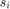 into the coefficient vector , we can write that , with .
We say that signal is -sparse in the basis if there exists a vector with only  nonzero entries such that .
nonzero entries such that .
If we use basis matrix containing unit-norm column vectors of length where 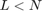 (i.e. 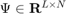), then for any vector there exist infinitely many decompositions such that . We refer to as the overcomplete sparsifying dictionary.
Sparsifying dictionary can be:
- chosen from a known set of transforms like DCT, wavelet...
- learnt from data
Kronecker product matrices were proposed as sparsifying bases for multidimensional signals to jointly model the signal structure along each of its dimensions. Kronecker product sparsifying bases combine the structures encoded by the sparsifying bases for each signal dimension into a single matrix. Kronecker product measurement matrices can be implemented by performing a sequence of independent multiplexing operations on each signal dimension
% example dictionary for 1D-DCT transformation figure dct_1d = full(wmpdictionary(64, 'lstcpt', {'dct'})); visualizeDictionary(dct_1d) title('1D-DCT Dictionary') % example dictionary for 1D-HAAR transformation figure haar_1d = full(wmpdictionary(64, 'lstcpt', {{'haar', 3}})); visualizeDictionary(haar_1d) title('1D-DWT Dictionary - HAAR') % example dictionary for 2D-DCT transformation - using Kronecked product figure dct_2d = kron(dctmtx(8),dctmtx(8))'; visualizeDictionary(dct_2d) title('2D-DCT Dictionary') % example dictionary for 2D-HAAR transformation - using Kronecked product figure haar_1d = full(wmpdictionary(8, 'lstcpt', {{'haar', 3}})); visualizeDictionary(kron(haar_1d, haar_1d)) title('2D-DWT Dictionary - HAAR')


Uncertainty Principle
As an illustrative example, we will consider the case where our dictionary is the union of two particular orthobases: the identity (spike) basis and the Fourier (sine) basis .
Spike and Fourier basis are mutually fully incoherent in the sense that it takes spikes to build up a single sinusoid and also it takes sinusoids to build up a single spike.
n = 64; fourier = (1/sqrt(n))*exp((1j*2*pi*(0:n-1)'*(0:n-1))/n); spike = eye(n); psi = [spike, fourier]; figure imagesc(real(psi)) axis image title('Spike/Fourier Dictionary')

Sines and spikes example
Now we will create a signal that is a mixture of spikes and sines. As we know that the first half of our matrix contains spike functions and the second half corresponds to sine functions, we can construct random sparsity pattern with sparsity K and compute to obtain a signal which is a mixture of impulses and sinusoids.
%desired sparsity K K = 2; %randomly selected basis coefficients idx = randi([1,2*n], 1, K); %random sparsity vector s = zeros(2*n, 1); s(idx) = 1; %obtain the signal which is a mixture of impulses and sinusoids x = psi*s; %visualize signal figure stem(real(x)) title('Signal - mixture of K impulses and sinusoids')

Minimum Energy Decomposition - norm
There are infinite number of ways we can decompose signal x using atoms from our dictionary. Most natural way would be to use certain basis functions which correspond to previously selected basis function indices. This way we get the sparsest possible representation.
Another way we can get representation for x is by applying and by dividing the result by 2. Since , we get next reproducing formula for x.
When we apply we get result that corresponds to the minimum energy decomposition of our signal into a coefficient vector that represents x. Minimum energy solution corresponds to norm minimizaton. Unfortunately, minimum energy decomposition almost never yields the sparsest possible soultion. The reason for this is that the vector that a vector has minimum nenergy when its total energy is distribured over all the coefficients of the vector. gives us a solution that is dense, but has small values for the coefficients.
Our ability to separate sines part from the spikes part of our signal of interest is what will determine whether or nor we can find a unique sparse decomposition. Being able to tell these two components apart comes from a new kind of uncertainty principle which states that a signal can't be too sparse in time and frequency domain simoultaneously.
%minimum energy decomposition s = psi'*x; figure stem(real(s)) title('Minimum energy decomposition - l_2 norm')

Sparse decomposition
Since our goal of finding sparsest possible representation of our signal over some basis is equivalent to finding the solution with the smallest number of nonzero elements in basis coefficient vector we will use pseudo-norm to find our solution. Sparse signal recovery can be formulated as finding minimum-cardinality solution to a constrained optimization problem. In the noiseless case, our constraint is simply , while in the noisy case(assuming Gaussian noise), the solution must satisfy where is the hypothetical noiseless representation and the actual representation is -close to it in norm. The objective function is the cardinality of s(number of nonzeros) which is often denoted and called norm of .
Optimization problems corresponding to noiseless and noisy sparse signal recovery can be written as:

In general, finding a minimum-cardinality solution satisfying linear constraints is an NP-combinatorial problem and an approximation is necessary to achieve computational efficiency. Two main approximation approaches are typically used in sparse recovery: the first one is to address the original NP-combinatorial problem via approximate methods, such as greedy search, while the second one is to replace the intractable problem with its convex relaxation that is easy to solve. In other words, one can either solve the exact problem approximately, or solve an approximate problem exactly.
In figure below, we can see sparse decomposition of our signal of interest. Notice that there are only K coefficients active, while others are equal to zero and that is exactly what we wanted to achieve.
%sparse decomposition nIter = 10; s = sparseCode(x, psi, K, nIter); figure stem(real(s)) title('Sparse decomposition - l_0 norm')

Sparse Recovery Problem Formulations
We will use the following notation in this section:  is an unobserbed sparse signal,
is an unobserbed sparse signal,  is a vector of measurements(observations), and is a design matrix.
is a vector of measurements(observations), and is a design matrix.
The simplest problem we are going to start with is the noiseless signal recovery from a set of linear measurements, i.e. solving for x the system of linear equations:
It is usually assumed that is a full-rank matrix, and thus for any , the above system of linear equations has a solution. Note that when the number of unknown variables, i.e. dimensionality of the signal, exceeds the number of observations, i.e. when %N\geq M%, the above system is underdetermined, and can have infinitely many solutions. In order to recover the signal , it is necessary to further constrain, or regularize, the problem. This is usually done by introducing an objective function, or regularizer R(x), that encodes additional properties of the signal, with lower values corresponding to more desirable solutions. Signal recovery is then formulated as a constrained optimization problem:
In general, norms for particular values of , denoted or more precisely their -th power 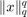 are frequently used as regularizers in constrained optimization problems.
For a , the norm, also called just -norm of a vector is defined as:
We can now observe relation between cardinality and -norms. The function referred to as -norm of is defined as a limit of when :
For each , when , 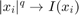, the indicator function, which is 0 at and 1 otherwise. Thus, , which gives exactly the number of nonzero elements of vector x called cardinality. Using the cardinality function, we can now write the problem of sparse signal recovery from noiseless linear measurements as:
As already mentioned before, the above optimization problem is NP-hard and no known algorithm can solve it efficiently in polynomial time. Therefore, approximations are necessary and were already presented before. Under appropriate conditions the optimal solution can be recovered efficiently by certain appproximate techniques.
First approach to approximation is a heuristic-based search such as gready search. In gready search method, one can start with a zero vector and keep adding nonzero coefficients one by one, selecting at each step the coefficient that leads to the best improvement in the objective function(gready coordinate descent). In general, such heuristic search methods are not guaranteed to find the global optimum. However, in practive, they are simple to implement, very computationally efficient and under certain conditions they are even guaranteed to recovel the optimal solution.
An alternative approximation technique is the relaxation approach based on replacing an intractable objective function or constraint by a tractable one. For example, convex relaxations approximates a non-convex optimization problem by a convex one, i.e. by a problem with convex objective and convex constraints. Such problems are known to be "easy", i.e. there exists a variety of efficient optimization methods for solving convex problems. Clearly, besides being easy to solve, e.g., convex, the relaxed version of the optimization problem must also enforce solution sparsity. In the following sections, we discuss lq-norm based relaxations, and show that the Zi-norm occupies a unique position among them, combining convexity with sparsity. A convex optimization problem is minimization of a convex function over a convex set of feasible solutions defined by the constraints. Convex problems are easier to solve than general optimization problems because of the important property that any local minima of a convex function is also a global one.
Relaxations of Original Sparse Recovery Problem
We will focus on the -norms as possible relaxations of -norm. These functions are convex for and nonconvex for . For example, -norm(Euclidean norm) is natural first choice as a relaxation of -norm. Our sparse recovery problem now writes:
Using -norm as an objective has several advantages some of which are its convexity and thus its property that it has a unique minimum, and finally it solution is available in a closed form. The closed form solution to this problem is also known as pseudo-inverse solution of when has more columns than rows(we assume that is full-rank, i.e. all of its rows are linearly independent).
However, despite its convenient properties, -norm has a serious drawback when it comes to sparse recovery. It turns out that the optimal solution obtained by pseudo-inverse is practically never sparse.
To understand why the l2-norm does not promote the solution sparsity while the -norm does, and to understand the convexity and sparsity-inducing properties of -norms in general, let us consider the geometry of a sparse recovery problem, where replaces the original cardinality objective :
Sets of vectors with same value of the function ,i.e. , are called the level sets of . For example, the level sets of function are vector sets with same -norm. A set of vectors satisfying is called an -ball of radius r; its “surface” (set boundary) is the corresponding level set . Note that the corresponding -balls bounded by the level sets are convex for (line segments between a pair of its points belong to the ball), and nonconvex for (line segments between a pair of its points do not always belong to the ball).
From a geometric point of view, solving the optimization problem(Pq) is equivalent to “blowing up” -balls with the center at the origin, i.e., increasing their radius, starting from 0, until they touch the hyperplane Ax = y. The resulting point is the minimum -norm vector that is also a feasible point, i.e. it is the optimal solution of sparse recovery problem.

Note that when , -balls have sharp “corners” on the coordinate axis, corresponding to sparse vectors, since some of their coordinates are zero, but -balls for do not have this property. Thus, for , -balls are likely to meet the hyperplane at the corners, thus producing sparse solutions, while for the intersection practically never occurs at the axes, and thus solutions are not sparse.
Within the family of functions, only those with are convex, but only those with are sparsity-enforcing. The only function within that family that has both useful properties is therefore , i.e.the -norm. This unique combination of sparsity and convexity is the reason for the widespread use of -norms in the modern sparse signal recovery field. Optimization problem using norm writes:
x = (-1:0.01:1); figure hold on plot(x, (sum(abs(x).^2, 1))) plot(x, (sum(abs(x).^1, 1))) plot(x, (sum(abs(x).^(1/2), 1))) plot(x, (sum(abs(x).^(1/100), 1))) plot(x, (sum(abs(x).^(realmin), 1))) axis tight

Compressed Sensing
The key idea behind compressive sensing is that the majority of real-life signals(images, audio...) can be well approximated by sparse representation vectors, given some appropriate basis , and that exploiting the sparse signal structure can dramatically reduce the signal acquisition cost. Traditional approach to signal acquisition is based on the classical Shannon- Nyquist result stating that in order to preserve information about a signal, one must sample the signal at a rate which is at least twice the signal's bandwidth, defined as the highest frequency in the signal's spectrum. Note, however, that such classical scenario gives a worst-case bound, since it does not take advantage of any specific structure that the signal may possess. In practice, sampling at the Nyquist rate usually produces a tremendous number of samples, e.g., in digital and video cameras, and must be followed by a compression step in order to store or transmit this information efficiently.
The compression step uses some basis to represent a signal (e.g., Fourier, wavelets, etc.) and essentially throws away a large fraction of coefficients, leaving a relatively few important ones. Thus, a natural question is whether the compression step can be combined with the acquisition step, in order to avoid the collection of an unnecessarily large number of samples.
Compressive sensing offers positive answer to the above question. Let be a signal that can be represented sparsely in some basis i.e. where is an matrix of basis vectors(columns), and where is a sparse vector of the signal's coordinates with only nonzeros. Though the signal is not observed directly, we can obtain a set of linear measurements:
where is an measurement matrix and is a set of measurements or samples where can be much smaller than the original dimensionality of the signal, hence the name compressive sensing(CS).
The central problem of compressed sensing is reconstruction of a high-dimensional sparse signal representation from a low-dimensional linear observation .
Uniqueness of Sparse Recovery Problem Solution
In this section we will discuss when the solutions of the - and - norm minimization problems are unique. The main design criteria for matrix is to enable the unique identification of a signal of interest from its measurements . Clearly, when we consider the class of K-sparse signals , the number of measurements for any matrix design, since the identification problem has unknowns.
We will now determine properties of that guarantee that distinct signals , lead to different measurement vectors . In other words, we want each vector to be matched to at most one vector  such that .
such that .
A key relevant property of the matrix in this context is its spark. Given an matrix , its spark , is defined as the minimal number of linearly dependent columns. Spark is closely related to the Kruskal's rank defined as the maximal number such that every subset of columns of the matrix is linearly independent.
By definition, the vectors in the null-space of the matrix must satisfy , since these vectors combine linearly columns from to give the zero vector, and at least such columns are necessary by definition.
Sparse recovery solution uniqueness via spark can be stated as:
- A vector is the unique solution of the sparse recovery problem if and only if is a solution of and
or in alternative formulation:
- If
 , then for each measurement vector there exists at most one signal such that .
, then for each measurement vector there exists at most one signal such that .
We can provide proof for the above theorem. Consider an alternative solution that satisfies the same linear system . This implies that must be in the null-space of , i.e. (the columns of corresponding to nonzero entries of the vector are linearly dependent). Thus, the number of such columns must be greater or equal to by definition of spark. Since the support of is a union of supports of and , we get . But since , we get:
which proves that is indeed the sparsest solution.
The singleton bound yields that the highest spark of an matrix with is less than or equal to and using the before stated theorems we get the requirement .
While spark is useful notion for proving the exact recovery of a sparse optimization problem, it is NP-hard to compute since one must verify that all sets of columns of a certain size are linearly independent. Thus, it is preferable to use properties of which are easily computable to provide recovery guarantees.
The coherence of a matrix is the largest absolute inner product between any two columns of :
For any matrix ,
Quite simple way to read the coherence is from the absolute value Gram matrix. Gram matrix is defined as where we are considering conjugate transpose of the matrix A. To read the coherence from Gram matrix, we reject the diagonal elements since they correspond to the inner product of an atom with itself(for a properly normalized dictionary they should be 1 anyway). Since G is symmetric we need to look only upper triangular half of it to read off the coherence. The value of coherence is equal to largest value in upper triangular part of matrix with diagonal excluded.
It can be shown that . The lower bound is known as the Welch bound. Note that when , the lower bound is approximately
We can show computation of coherence using Gram matrix on example of dictionary composed of spike and sine basis functions.
n = 64; fourier = (1/sqrt(n))*exp((1j*2*pi*(0:n-1)'*(0:n-1))/n); spike = eye(n); % fourier(7,:)=spike(15,:); % fourier = normalizeColumns(fourier); psi = [spike, fourier]; G = psi'*psi; coherence = max(max(abs(triu(G,1)))) figure imagesc(real(G)) title('Gram matrix')
coherence =
0.1250

We will now analyze a method for constructing compressive sensing matrices that are maximally incoherent with transformation matrix . First we define when a vector is maximally incoherent to some basis. Let be an orthonormal basis and be a unit norm vector, then is maximally incoherent to the basis is . In other words, a unit-norm vector is maximally incoherent to an orthonormal basis when it makes the largest angle possible to the closest .
For the canonical basis(the axes of \mathbf{R}^N) the solution is easy. Any vector in the vertices of the hyper cube(with coordinates ) is equidistant from all the basis elements. There are  possible solutions and if one has to construct a basis maximally incoherent to , one has to chose linearly independent elements from the solutions. As it can be noted, the Hadamard basis provides an example of a basis that is maximally incoherent to the canonical. In addition, any two vectors from Hadamard basis have the property of being orthogonal one to another and thus the vectors in are orthogonal to each other, maximizing information.
possible solutions and if one has to construct a basis maximally incoherent to , one has to chose linearly independent elements from the solutions. As it can be noted, the Hadamard basis provides an example of a basis that is maximally incoherent to the canonical. In addition, any two vectors from Hadamard basis have the property of being orthogonal one to another and thus the vectors in are orthogonal to each other, maximizing information.
Any orthonormal basis can be seen as a rotation of the canonical basis. Therefore, to find a maximally incoherent (an matrix with ) to a basis it suffices to rotate linearly independent vectors from the hypercube using the rotation that transforms canonical basis into . This result is one possible measurement matrix maximally incoherent to being given by where is such that its elements are . One such can be formed by rows of the Hadamard matrix.
Simple algorithm for computing maximally incoherent matrix with elements with respect to an orthogonal basis is to choose random rows from the Hadamard matrix of size and to perform .
N = 64;
psi = (1/sqrt(N))*exp((1j*2*pi*(0:N-1)'*(0:N-1))/N);
H = walsh(N);
phi = normalizeColumns(H * psi);
theta = [phi, psi];
G = theta' * theta;
coherence = max(max(abs(triu(G, 1))))
figure
imagesc(real(G))
title('Gram matrix')
coherence =
0.1768

Restricted Isometry Property - RIP
The prior properties of the CS design matrix provide guarantees of uniqueness when the measurement vector is obtained without error. There can be two sources of error in measurements: inaccuracies due to noise at sensing stage(in the form of additive noise ) and inaccuracies due to mismatches between the design matrix used during recovery and that implemented during acquisition(in the form of multiplicative noise ). Under these sources of error, it is no longer possible to guarantee uniqueness, but it is desirable for the measurement process to be tolerant to both types of error. To be more formal, we would like the distance between the measurement vectors for two sparse signals and 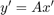 to be proportional to the distance between the original signal vectors and . Such a property allows us to guarantee that for small enough noise, two sparse vectors that are far appart from each other cannot lead to the same noisy measurement vector. This behaviour has been formalized into the restricted isometry property(RIP):
- A matrix A has the -restricted isometry property(-RIP) if, for all ,
In words, the (K,\delta)-RIP ensures that all submatrices of of size are close to an isometry, and therefore distance-preserving. This property suffices to prove that the recovery is stable to presence of additive noise and the RIP also leads to stability with respect to the multiplicative noise introduced by the CS matrix mismatcs .
Algorithms for Sparse Recovery
We will focus on the noisy sparse recovery problems:
- -norm minimization:
- -norm relaxation: 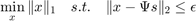
- Lagrangian form minimization (LASSO):
Recall that x is an N-dimensional unknown sparse signal, which in a statistical setting corresponds to a vector of coefficients of a linear regression model, where each coefficient signifies the amount of influence the -th input, or predictor variable , has on the output , an -dimensional vector of observations of a target variable . is an design matrix, where the -th column is an -dimensional sample of a random variable , i.e. a set of independent and identically distributed, or i.i.d., observations.
We would like to focus on the specific case of orthogonal design matrices. It turns out that in such case both - and -norm optimization problems decompose into independent univariate problems, and their optimal solutions can be easily found by very simple univariate thresholding procedures.
Univariate Thresholding
An orthonormal(orthogonal) matrix is an square matrix satisfying where denotes the identity matrix. A linear transformation defined by an orthogonal matrix has a nice property, it preserves the -norm of a vector.
The same is also true for and we get:
where 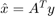 corresponds to the ordinary least squares(OLS) solution when is orthogonal, i.e. This transformation of the sum-squared loss will greatly simplify our optimization problems.
-norm Minimization
The problem of -norm minimization can now be rewritten as:
In other words, we are looking for the sparsest (i.e., smallest -norm) solution that is -close in -sense to the OLS solution .
It is easy to construct such solution by choosing k largest (in the absolute value) coordinates of x and by setting the rest of the coordinates to zero, where k is the smallest number of such coordinates needed to get -close to , i.e. to make the solution feasible.
This can also be viewed as an univariate hard thresholding of the OLS solution , namely:
where is a threshold value below the -th largest, but above the -th largest value among .
%hard thresholding hardThresholding = @(x, th) x.*(abs(x)>=th); x = -1:0.01:1; threshold = 0.35; x_ht = hardThresholding(x, threshold); figure, axis tight plot(x, x_ht) hold on plot((-threshold:0.01:threshold), (-threshold:0.01:threshold), '-.') title('Hard Thresholding Operator') xlabel('x') ylabel('x*')

-norm Minimization
For an orthogonal , the LASSO problem becomes:
which trivially decomposes into independent, univariate optimization problems, one per each variable, :
Global minimum solution for -norm minimization can be obtained using soft thresholding operator:
When the design matrix is orthogonal, both - and -norm minimization problems decompose into a set of independent univariate problems which can be easily solved by first computing the OLS solution and then applying thresholding operators to each coefficient.
%soft thresholding softThresholding = @(x, th) sign(x).*max(abs(x)-th,0); x = -1:0.01:1; threshold = 0.35; x_st = softThresholding(x, threshold); figure, axis tight plot(x, x_st) hold on plot(x, x, '-.') title('Soft Thresholding Operator') xlabel('x') ylabel('x*')

Algorithms for -norm Minimization
In this section we focus on approximate optimization methods such as greedy approaches for solving -norm minimization problems:
In the second form of the optimization problem represents bound on the number of nonzero elements and is uniquely defined by parameter in the first formulation of the problem. The latter problem is also known as the best subset selection problem, since it aims at finding a subset of variables that yield the lowest quadratic loss, i.e. the best linear regression fit.
At high-level greedy algorithmic scheme can be outlined as:
- Start with an empty support set, i.e. the set of nonzero variables , and zero vector as the current solution
- Select the best variable using some ranking cirterion , and add the variable to the current support set.
- Update the current solution, and recompute the current objective function, also called the residual.
- If the current solution satisfies a given stopping criterion , exit and return , otherwise go to step 2.
Gready methods:
- Matching Pursuit
- Orthogonal Matching Pursuit(OMP)
- Least-squares OMP(LS-OMP)
- Stagewise OMP(StOMP)
- Regularized OMP(ROMP)
Algorithms for -norm Minimization(LASSO)
- Least Angle Regression for LASSO(LARS)
- Coordinate Descent
- Proximal methods
- Accelerated methods
Signal Reconstruction Using Iterative Thresholding
close all clearvars clc warning off % number of signal samples n = 256; % number of acquired samples m = 64; % create Fourier transformation matrix fourier = (1/sqrt(n))*exp((1j*2*pi*(0:n-1)'*(0:n-1))/n); psi = fourier; % desired signal sparsity K K = 10; % randomly selected basis coefficients idx = randi([1, n], 1, K); % random sparsity vector with different coefficient weights s_orig = zeros(n, 1); s_orig(idx) = 1; s_orig = rand(size(s_orig)).*s_orig; % obtain the signal which is a mixture of impulses and sinusoids x_orig = psi * s_orig; % undersampling factor usFactor = 2; phi = zeros(size(s_orig)); phi(1:usFactor:end) = 1; % undersample original signal x_us = phi .* x_orig; % calculate Fourier spectrum of undersampled signal s_us = psi' * x_us; figure subplot(231), stem(x_orig), title('Original signal') subplot(234), stem(s_orig), title('Original Spectrum') subplot(232), stem(x_us), title('Uniformly Undersampled signal') subplot(235), stem(s_us), title('Spectrum with aliasing') phi = zeros(size(s_orig)); phi(randperm(n, m)) = 1; % undersample original signal x_us = phi .* x_orig; % calculate Fourier spectrum of undersampled signal s_us = psi' * x_us; subplot(233), stem(x_us), title('Randomly Undersampled signal') subplot(236), stem(s_us), title('Spectrum with noise-like undersampling artifacts') % number of iterations for thresholding algorithm nIter = 50; % initialization residual = []; s_est = zeros(size(s_us)); for iterNo = 1:nIter residual = x_us - psi*s_est; % set threshold and perform thresholding th = 0.99*max(abs(psi'*residual)); s_est = hardThreshold(s_est + psi'*residual, th); figure(200) subplot(311), stem(s_orig), title('Original Spectrum') subplot(312), line([0, n], [th, th], 'Color', 'r', 'LineStyle', '-.'); line([0, n], [-th, -th], 'Color', 'r', 'LineStyle', '-.'); hold on stem((s_est + psi'*residual)), title('Subsampled Spectrum') subplot(313), stem((s_est)), title('Recovered Spectrum') drawnow % if desired sparsity reached, break thresholding procedure if(sum(s_est~=0)>=K) break; end end warning on


Compressive Sensing MRI
Magnetic resonance imaging(MRI) is an essential medical imaging tool with an inherently slow data acquisiton process. Appying CS to MRI offers potentially significant scan time reductions. MRI obeys two key requirements for successful application of CS:
- medical imagery is naturally compressible by sparse coding in an appropriate transform domain(e.g. wavelet transform).
- MRI scanners natureally acquire encoded samples(Fourier domain measurements), rather than direct pixel samples.
close all clearvars clc % create phantom image of size N N = 256; image = phantom(N); % image = im2double(imresize(rgb2gray(imread('lenna.tiff')), [N N])); % create subsampling mask with radial lines nSamplingLines = 64; rot=360/nSamplingLines; angles = 0:rot:360; mask=zeros(N); for i = 1:nSamplingLines line = imrotate(eye(size(image)), angles(i), 'bilinear', 'crop'); mask = mask+line; mask = mask>0; end % low-pass filter mask mask = ones(64); mask = padarray(mask, 0.5*[N-64, N-64]); % aliasing mask - subsampled % mask = kron(ones(64), [1 0 0 0;1 0 0 0 ; 0 0 0 0 ; 0 0 0 0 ]); % random subsampling mask % mask = rand(N) > 0.5; figure, imagesc(mask) phi = @(x) masked_FFT((x), mask); phi_inv = @(x) (masked_FFT_t(x, mask)); % subsample the Fourier spectrum of the original image y = phi(image); figure, colormap gray imagesc(image) colormap(gray) axis image title('Original') drawnow % backprojection is simple inverse Fourier transform figure, colormap gray imagesc(phi_inv(y)) colormap(gray) axis image title('Back-projection') drawnow % denoising function; tv_iters = 10; Psi = @(x,th) tvdenoise(x,2/th,tv_iters); % set the penalty function, to compute the objective Phi = @(x) TVnorm(x); % regularization parameters (empirical) tau = 1e-1; tolA = 1e-10; % -- TwIST --------------------------- % stop criterium: the relative change in the objective function % falls below 'ToleranceA' [x_twist,~,obj_twist,... times_twist,~,mse_twist]= ... TwIST(y, phi, tau,... 'Lambda', 1e-3, ... 'AT', phi_inv, ... 'Psi', Psi, ... 'Phi',Phi, ... 'True_x', image, ... 'Monotone',1,... 'MaxiterA', 100, ... 'Initialization',0,... 'StopCriterion',1,... 'ToleranceA',tolA,... 'Verbose', 0); figure, colormap gray imagesc(x_twist); axis image title('Estimate') figure semilogy(times_twist, (mse_twist*numel(image)).^0.5/norm(image,'fro'), 'LineWidth',2); title('error ||x^{t}-x||_2/||x||_2') xlabel('CPU time (sec)') grid on figure semilogy(times_twist, obj_twist, 'b','LineWidth',2) title('Objective function') xlabel('CPU time (sec)') grid on


Compressive Imaging
There has been significant interest in compressed sensing in systems that acquire and process 2D still images. CS offers a compelling alternative to traditional image acquisition paradigm. Instead of sampling in high resolution CS offers the possibility of directly acquiring the image in reduced dimensionality.
Perhaps the most well-known architecture for the CS acquisition of still images is the "single-pixel camera" which uses a digital micromirror device(DMD) to optically perform the inner products in the CS measurement process. In general, single-pixel imagers are based on optical modulators which enable us to obtain projections of an image against vectors that have binary entries. Example measurement bases for compressive imaging architecture are Walsh-Hadamard matrices, Bernoulli matrices, Rademacher matrices and Noiselet matrices.
In measurement matrix design process, we have to take into account restrictions imposed by hardware. When using DMD for optical multiplexing in compressive imaging, we have to design binary measurement matrices since micromirror off state corresponds to zero entry in measurement matrix, and micromirror on state corresponds to one.
A simple trick to convert measurements from binary to 1/-1 measurements is to obtain measurement with all mirrors set to on position . Then it is simple to convert measurement using .
Straightforward application of CS to imaging applications is to vectorize image into -dimensional vector . Then we can apply measurement matrix whose dimensions are . Next step is to apply some CS recovery algorithm with as the measurement matrix and optionally with matrix that sparsifies observed phenomenon. Finally, we unrasterize estimated to produce recovered image .
There are several problems with straightforward approach to compressive imaging. First one is that huge memory is required to store random sampling operator . The second disadvantage is that recovery algorithm is blind to the fact that data is an image and it ignores known attributes of images, searches simply for consistent, sparse solution and is not necessarily visualy pleasing.
Block-based Compressive Sensing (BCS) offers solution to the above problems. In BCS, image is partitioned into  blocks. If we denote -th block of the image as , then we can write measurement acquisition as where is random matrix. In this case, the global measurement matrix is block-diagonal.
blocks. If we denote -th block of the image as , then we can write measurement acquisition as where is random matrix. In this case, the global measurement matrix is block-diagonal.
Note that BCS is memory efficient as we just need to store an matrix rather than full measurement matrix . Obviously, there is a trade-off int the selection of block dimension . Small requires less memory in storage and has faster implementation, while large offers better reconstruction performance.
whMatrix = walsh(64); brMatrix = rand(64)>0.5; gaMatrix = randn(64); figure, colormap gray imagesc(whMatrix) title('Walsh-Hadamard Matrix') figure, colormap gray imagesc(brMatrix) title('Random Bernoulli/Rademacher Matrix') figure, colormap gray imagesc(gaMatrix) title('Gaussian Matrix')


%%BLOCK COMPRESSIVE IMAGING EXAMPLE - noiseless case clearvars close all clc % load image imagePath = '.\data\lenna.tiff'; image = rgb2gray(im2double(imresize(imread(imagePath), 0.5))); [rows, cols] = size(image); % choose optimization package for sparse problem solving % options: sedumi, mex, mex_w, omp, grad, sparsa, sparsa2 optimizationPackage = 'mex'; % choose block size - divide whole image in non-overlapping blocks blockSize = 8; % choose number of measurements used in reconstruction % desired M << N noOfMeasurements = 32; % choose measurement matrix type % options: walsh, bern, radem, gauss, dct phi_type = 'walsh'; % generate desired transformation matrix and use Kronecker delta product to % create 2D transformation matrix psi_1d = full(wmpdictionary(blockSize, 'lstcpt', {'dct'})); psi = kron(psi_1d, psi_1d); % we will use binarized measurement measurement matrix to simulate DMD % binary character, but in the reconstruction process we have option to use % the same binarized measurement matrix or alternatively we can convert % measurements to correspond to (-1/1) matrix entries % matrix phi_m is used in measurement process, while matrix phi_r is used % in reconstrucion process switch phi_type case 'walsh' % create random Walsh matrix phi = walsh(blockSize^2); % phi(phi<0)=0; phi_r = phi; % comment out the line below if you want the same measurement matrix % used in measurement and reconstruction process phi(phi<0) = 0; phi_m = phi; case 'bern' % create random Bernoulli matrix (0/1) entries phi = rand(blockSize^2) < 0.5; phi = []; for row=1:blockSize^2 phi_row = zeros(1, blockSize^2); phi_row(1:32) = 1; phi_row = phi_row(randperm(numel(phi_row))); phi = [phi; phi_row]; end phi_r = phi; phi_m = phi; case 'radem' % create random Rademacher matrix (-1/1) entries phi = 2*(rand(blockSize^2) < 0.5) - 1; phi_r = phi; phi(phi<0) = 0; phi_m = phi; case 'gauss' % create random Gaussian matrix phi = randn(blockSize^2); phi_r = phi; phi_m = phi; case 'dct' % create DCT matrix phi = dctmtx(blockSize^2); phi_r = phi; phi_m = phi; end % indices of M measurements to keep % ind = logical(randerr(1, blockSize^2, noOfMeasurements)); ind = [ones(1, noOfMeasurements), zeros(1, blockSize^2-noOfMeasurements)]; % diagonal reduction matrix R = diag(ind); R(all(R==0, 2), :)=[]; % initialize matrix for reconstructed image image_est = []; % block based CS reconstruction for k = 1: blockSize : rows - blockSize + 1 for l = 1: blockSize : cols - blockSize + 1 imBlock = image(k:k+blockSize-1, l:l+blockSize-1); % calculate observation vector y by calculating inner product % of measurement matrix phi and vectorized input data x y = phi_m * reshape(imBlock, blockSize*blockSize, 1); % calculate observations using matrix full of ones % this will be used to transform (0/1) measurements -> (1/-1) y_1 = ones(size(phi_m)) * reshape(imBlock, blockSize*blockSize, 1); % select only M observations out of total N if(phi_r == phi_m) y_m = R*y; phi_f = R*phi_m; else % convert measurements obtained with binary measurement matrix to % measurements corresponding to measurement matrix with (-1/1) % entries y_m = 2*R*y - R*y_1; % reduced observation matrix (phi), only M rows phi_f = R * phi_r; end % define compressive sensing design matrix theta theta = phi_f * psi; [M, N] = size(theta); % save single measurement result for meausurement visualization measurementVisualization(k:k+blockSize-1, l:l+blockSize-1) = reshape(repmat(y(1), blockSize^2, 1), [blockSize blockSize]); % CS reconstruction switch optimizationPackage case 'sedumi' s_est = cs_sr06(y_m, theta); case 'omp' sparsity = M/2; s_est = OMP(theta, y_m, sparsity); case 'mex' param.mode = 3; param.cholesky = true; param.lambda = 0; param.eps = 0; param.numThreads = -1; s_est = mexLasso(y_m, theta, param); case 'mex_w' param.mode = 3; param.cholesky = true; param.lambda = 10000000; param.eps = 0; param.numThreads = -1; weights = (1:size(theta,2)).^1'; % weights = [size(theta,2):-1:1].^2'; s_est = mexLassoWeighted(y_m, theta, weights, param); case 'grad' sparsity = M/2; nIter = 500; stepSize = 10000; s_est = sparseCode(y_m, theta, sparsity, nIter, 'StepSize', stepSize); case 'sparsa' tau = 1e-15; tolA = 1e-10; [s_est] = SpaRSA(y_m, theta, tau,... 'Debias',0,... 'Initialization',0,... 'StopCriterion', 0,... 'ToleranceA', tolA,... 'Verbose', 0); case 'sparsa2' tau = 1e-15; tolA = 1e-10; Psi = @(x,th) soft(x,th); Phi = @(x) l0norm(x); W = @(x) idct2(x); WT = @(x) dct2(x); A = @(x) phi_f * W(x); At = @(x) WT(phi_f' * x); [s_est]= SpaRSA(y_m, A, tau,... 'AT', At, ... 'Phi', Phi, ... 'Psi', Psi, ... 'Monotone',0,... 'MaxiterA', 100, ... 'Initialization',0,... 'StopCriterion', 1,... 'ToleranceA', tolA,... 'Verbose', 0); end if(strcmp(optimizationPackage, 'sparsa2')) signal_est = idct2(s_est); else signal_est = (psi * s_est); end image_est(k:k+blockSize-1, l:l+blockSize-1) = reshape(signal_est, [blockSize blockSize]); end figure(100) imagesc(image_est), title('Image Reconstruction'), colormap gray, axis image drawnow end figure, colormap gray, imagesc(image), title('Original image'), axis image figure, colormap gray, imagesc(measurementVisualization), title('Measurement Visualization'), axis image figure, colormap gray, imagesc(image_est), title('Reconstructed image'), axis image


%%BLOCK COMPRESSIVE IMAGING EXAMPLE - noisy case - additive noise clearvars close all clc % load image imagePath = '.\data\lenna.tiff'; image = rgb2gray(im2double(imresize(imread(imagePath), 0.5))); [rows, cols] = size(image); % choose optimization package for sparse problem solving % options: sedumi_err, mex_err, mex_w_err, omp, grad, sparsa, sparsa2 optimizationPackage = 'mex_err'; % choose block size - divide whole image in non-overlapping blocks blockSize = 8; % choose number of measurements used in reconstruction % desired M << N noOfMeasurements = 32; % additive noise sigmaAdditiveNoise = 0.01; % choose measurement matrix type % options: walsh, bern, radem, gauss, dct phi_type = 'walsh'; % generate desired transformation matrix and use Kronecker delta product to % create 2D transformation matrix psi_1d = full(wmpdictionary(blockSize, 'lstcpt', {'dct'})); psi = kron(psi_1d, psi_1d); % we will use binarized measurement measurement matrix to simulate DMD % binary character, but in the reconstruction process we have option to use % the same binarized measurement matrix or alternatively we can convert % measurements to correspond to (-1/1) matrix entries % matrix phi_m is used in measurement process, while matrix phi_r is used % in reconstrucion process switch phi_type case 'walsh' % create random Walsh matrix phi = walsh(blockSize^2); phi(phi<0)=0; case 'bern' % create random Bernoulli matrix (0/1) entries phi = rand(blockSize^2) < 0.5; phi = []; for row=1:blockSize^2 phi_row = zeros(1, blockSize^2); phi_row(1:32) = 1; phi_row = phi_row(randperm(numel(phi_row))); phi = [phi; phi_row]; end case 'radem' % create random Rademacher matrix (-1/1) entries phi = 2*(rand(blockSize^2) < 0.5) - 1; case 'gauss' % create random Gaussian matrix phi = randn(blockSize^2); case 'dct' % create DCT matrix phi = dctmtx(blockSize^2); end % indices of M measurements to keep % ind = logical(randerr(1, blockSize^2, noOfMeasurements)); ind = [ones(1, noOfMeasurements), zeros(1, blockSize^2-noOfMeasurements)]; % diagonal reduction matrix R = diag(ind); R(all(R==0, 2), :)=[]; % initialize matrix for reconstructed image image_est = []; % block based CS reconstruction for k = 1: blockSize : rows - blockSize + 1 for l = 1: blockSize : cols - blockSize + 1 imBlock = image(k:k+blockSize-1, l:l+blockSize-1); % calculate observation vector y by calculating inner product % of measurement matrix phi and vectorized input data x y = phi * reshape(imBlock, blockSize*blockSize, 1); % add additive noise to measurements y = y + sigmaAdditiveNoise*randn(size(y)); y_m = R*y; phi_f = R*phi; % define compressive sensing design matrix theta theta = phi_f * psi; [M, N] = size(theta); % save single measurement result for meausurement visualization measurementVisualization(k:k+blockSize-1, l:l+blockSize-1) = reshape(repmat(y(1), blockSize^2, 1), [blockSize blockSize]); % CS reconstruction switch optimizationPackage case 'sedumi_err' s_est = cs_sr07(y_m, theta, 5*sigmaAdditiveNoise); case 'omp_err' sparsity = M/2; s_est = OMPerr(theta, y_m, 2*sigmaAdditiveNoise); case 'mex_err' param.mode = 1; param.cholesky = true; param.lambda = 2*sigmaAdditiveNoise; param.numThreads = -1; s_est = mexLasso(y_m, theta, param); case 'mex_w_err' param.mode = 1; param.cholesky = true; param.lambda = 2*sigmaAdditiveNoise; param.numThreads = -1; weights = [1:size(theta,2)].^1'; % weights = [size(theta,2):-1:1].^2'; s_est = mexLassoWeighted(y_m, theta, weights, param); end signal_est = (psi * s_est); image_est(k:k+blockSize-1, l:l+blockSize-1) = reshape(signal_est, [blockSize blockSize]); end figure(100) imagesc(image_est), title('Image Reconstruction'), colormap gray, axis image drawnow end figure, colormap gray, imagesc(image), title('Original image'), axis image figure, colormap gray, imagesc(measurementVisualization), title('Measurement Visualization'), axis image figure, colormap gray, imagesc(image_est), title('Reconstructed image'), axis image


%%BLOCK COMPRESSIVE IMAGING EXAMPLE - noisy case - multiplicative noise clearvars % close all clc % load image imagePath = '.\data\lenna.tiff'; image = rgb2gray(im2double(imresize(imread(imagePath), 0.5))); [rows, cols] = size(image); % choose optimization package for sparse problem solving % options: sedumi_err, mex_err, mex_w_err, omp, grad, sparsa, sparsa2 optimizationPackage = 'mex_err'; % choose block size - divide whole image in non-overlapping blocks blockSize = 8; % choose number of measurements used in reconstruction % desired M << N noOfMeasurements = 32; % additive noise sigmaMultiplicativeNoise = 0.01; % choose measurement matrix type % options: walsh, bern, radem, gauss, dct phi_type = 'bern'; % generate desired transformation matrix and use Kronecker delta product to % create 2D transformation matrix psi_1d = full(wmpdictionary(blockSize, 'lstcpt', {'dct'})); psi = kron(psi_1d, psi_1d); % we will use binarized measurement measurement matrix to simulate DMD % binary character, but in the reconstruction process we have option to use % the same binarized measurement matrix or alternatively we can convert % measurements to correspond to (-1/1) matrix entries % matrix phi_m is used in measurement process, while matrix phi_r is used % in reconstrucion process switch phi_type case 'walsh' % create random Walsh matrix phi = walsh(blockSize^2); phi(phi<0)=0; case 'bern' % create random Bernoulli matrix (0/1) entries phi = rand(blockSize^2) < 0.5; phi = []; for row=1:blockSize^2 phi_row = zeros(1, blockSize^2); phi_row(1:32) = 1; phi_row = phi_row(randperm(numel(phi_row))); phi = [phi; phi_row]; end case 'radem' % create random Rademacher matrix (-1/1) entries phi = 2*(rand(blockSize^2) < 0.5) - 1; case 'gauss' % create random Gaussian matrix phi = randn(blockSize^2); case 'dct' % create DCT matrix phi = dctmtx(blockSize^2); end phi_m = phi + sigmaMultiplicativeNoise*repmat(randn(size(phi, 1), 1), 1, size(phi,2)); phi_r = phi; % indices of M measurements to keep % ind = logical(randerr(1, blockSize^2, noOfMeasurements)); ind = [ones(1, noOfMeasurements), zeros(1, blockSize^2-noOfMeasurements)]; % diagonal reduction matrix R = (diag(sparse(ind))); R=R(any(R),:); % initialize matrix for reconstructed image image_est = []; % block based CS reconstruction for k = 1: blockSize : rows - blockSize + 1 for l = 1: blockSize : cols - blockSize + 1 imBlock = image(k:k+blockSize-1, l:l+blockSize-1); % calculate observation vector y by calculating inner product % of measurement matrix phi and vectorized input data x y = phi_m * reshape(imBlock, blockSize*blockSize, 1); y_m = R*y; phi_f = R*phi_r; % define compressive sensing design matrix theta theta = phi_f * psi; [M, N] = size(theta); % save single measurement result for meausurement visualization measurementVisualization(k:k+blockSize-1, l:l+blockSize-1) = reshape(repmat(y(1), blockSize^2, 1), [blockSize blockSize]); % CS reconstruction switch optimizationPackage case 'sedumi_err' s_est = cs_sr07(y_m, theta, 100*sigmaMultiplicativeNoise); case 'omp_err' sparsity = M/2; s_est = OMPerr(theta, y_m, 2*sigmaMultiplicativeNoise); case 'mex_err' param.mode = 1; param.cholesky = true; param.lambda = 0; param.numThreads = -1; s_est = mexLasso(y_m, theta, param); case 'mex_w_err' param.mode = 1; param.cholesky = true; param.lambda = 2*sigmaMultiplicativeNoise; param.numThreads = -1; weights = [1:size(theta,2)].^1'; % weights = [size(theta,2):-1:1].^2'; s_est = mexLassoWeighted(y_m, theta, weights, param); end signal_est = (psi * s_est); image_est(k:k+blockSize-1, l:l+blockSize-1) = reshape(signal_est, [blockSize blockSize]); end figure(100) imagesc(image_est), title('Image Reconstruction'), colormap gray, axis image drawnow end figure, colormap gray, imagesc(image), title('Original image'), axis image figure, colormap gray, imagesc(measurementVisualization), title('Measurement Visualization'), axis image figure, colormap gray, imagesc(image_est), title('Reconstructed image'), axis image


Temporal Compressive Imaging
close all clearvars clc addpath('utilities', 'data'); frames = imreadDir('Y:\Projects\MATLAB Projects\Compressive Temporal Imaging\media\man\', 'tiff'); frames = imresize(reshape(cell2mat(frames), [size(frames{1}), size(frames, 2)]), 2); % load Traffic.mat % frames = X; noOfFrames = 8; mask_size = size(frames, 1); frames=frames(:,:, 1:noOfFrames); % SIMULATE CODED APERTURE mask = zeros(1, mask_size*mask_size); mask(1:size(mask,2)*0.66) = 1; mask = reshape(mask(randperm(numel(mask))), mask_size, mask_size); phi = []; y = []; for i=1:noOfFrames phi(:,:,i) = circshift(mask, [-1*i,0]); % mask is moving from up to down figure(1) imagesc(phi(:,:,i)) drawnow end % reconstruction method using Bregman iterations and SpaRSA % noise estimation variable psi = @(x) idct2(x); psi_inv = @(x) dct2(x); A = @(z) A_xy(z, phi); At = @(z) At_xy_nonorm(z, phi); y = A(frames); % denoising function tv_iters = 1; % Psi = @(x,th) tvdenoise(x, 2/th ,tv_iters); % Psi = @(x,th) hard(x,th); Psi = @(x,th) tvdenoise_sitcm(x, 2/th, tv_iters); % regularizer Phi = @(x) TVnorm_sitcm(x); % Phi = @(x) l0norm(x); % Phi_t =@(x) norm(x, 1); % regularization parameter tau = 1e-1; % stopping theshold tolA = 1e-10; [s_est]= SpaRSA(y, A, tau,... 'AT', At, ... 'Phi', Phi, ... 'Psi', Psi, ... 'Monotone',0,... 'MaxiterA', 100, ... 'Initialization',0,... 'StopCriterion', 2, ... 'ToleranceA', tolA,... 'Verbose', 0); reconstruction = reshape(s_est, [mask_size, mask_size, noOfFrames]); for i=1:noOfFrames figure(101) imagesc(reconstruction(:,:,i)) waitforbuttonpress end
Warning: Integer operands are required for colon operator when used as index


Reducing Blocking Artifacts In BCS
Block-based CS is more practical for images of a large size. However, it causes block boundaries between two adjacent blocks resulting in namely the blocking artefacts especially if the blocks have different qualities of CS recovery.
A small block size is preferred in CS due to its low sensing cost, whereas a large block size is favoured for better quality of the recovered image. This dilemma can be resolved by sensing in small blocks (SBS) but executing large block recovery (LBR). We will try to recover four small blocks simultaneously using a structural measurement matrix . Let 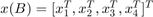 represent a large block of size (in recovery) and represent a small block of size (in sensing), then the measurement vector  of is
of is
A New Theory For Compressive Sensing - Breaking the Coherence Barrier
Traditional CS is based on three pillars: sparsity(there are important coefficients in the vector to be recovered and their location is arbitrary), incoherence(the values in the measurements matrix should be uniformly spread out), and unifom random sampling. In practical problems where physical device imposes the sampling operator these pillars are often lacking. Many such problems are coherent due to the physics or because they are infinite-dimensional. Other type of problems is where the sensing mechanism offers freedom to design the sampling strategy and the sampling operator.
The new CS theory and principles reveal that the optimal sampling strategy and benefits of CS depend on two factors: the structure of the signal and its resolution. To bridge the gap between the theory and practice, traditional CS pillars are replaced by new CS principles: asymptotic incoherence, asymptotic sparsity and multilevel sampling.
We can consider the MRI CS setup, i.e.  , where
, where  and
and  are the discrete Fourier and wavelet transforms(sampling and sparsity bases) respectively. The coherence here is
are the discrete Fourier and wavelet transforms(sampling and sparsity bases) respectively. The coherence here is  for any wavelet basis, so this problem has the worst possible coherence. The traditional CS bound states that all samples are needed in this case(i.e. full sampling
for any wavelet basis, so this problem has the worst possible coherence. The traditional CS bound states that all samples are needed in this case(i.e. full sampling  ), even though the original signal is typically highly sparse in wavelets. This lack of incoherence means that uniform random subsampling leads to a very poor recovery. This is known in MRI and is illustrated before in this paper. The root cause of this lack of incoherence is the discretization of what is intrinsically an infinite-dimensional problem into a finite-dimensional one. In short,
), even though the original signal is typically highly sparse in wavelets. This lack of incoherence means that uniform random subsampling leads to a very poor recovery. This is known in MRI and is illustrated before in this paper. The root cause of this lack of incoherence is the discretization of what is intrinsically an infinite-dimensional problem into a finite-dimensional one. In short,  converges to an infinite matrix and since the incoherence is the supremum of its entries, there exists some for which a coherence barrier is hit, resulting in the worst case for a CS recovery. This is not restricted to MRI only, any such discretization of an infinite-dimensional problem will suffer the same fate, including MRI, tomography, microscopy, seismology... Changing measurement matrix may provide marginal benefits, if any, since the coherence barrier always occurs at some .
converges to an infinite matrix and since the incoherence is the supremum of its entries, there exists some for which a coherence barrier is hit, resulting in the worst case for a CS recovery. This is not restricted to MRI only, any such discretization of an infinite-dimensional problem will suffer the same fate, including MRI, tomography, microscopy, seismology... Changing measurement matrix may provide marginal benefits, if any, since the coherence barrier always occurs at some .
Traditional CS states that the sampling strategy is completely independent of the location of nonzero coefficients of an -sparse vector , i.e. with the nonzero coefficients at arbitrary locations. The flip test allows us to evaluate whether this holds in practice.
Let  be a vector, and a measurement matrix. We then sample according to some pattern with and solve standard sparse recovery problem for , i.e.
be a vector, and a measurement matrix. We then sample according to some pattern with and solve standard sparse recovery problem for , i.e.  to obtain reconstruction
to obtain reconstruction  . Now we flip to obtain a vector with reverse entries,
. Now we flip to obtain a vector with reverse entries,  and solve standard sparse recovery problem for using the same and
and solve standard sparse recovery problem for using the same and  . Assuming
. Assuming  to be a solution, then by flipping we obtain a second reconstruction
to be a solution, then by flipping we obtain a second reconstruction  of the original vector , where
of the original vector , where  .
.
Assume is a sampling pattern for recovering using  . If sparsity alone dictates the reconstruction quality(since has the same sparsity as , being merely a permutation of x).
. If sparsity alone dictates the reconstruction quality(since has the same sparsity as , being merely a permutation of x).
As is evident, the flipped recovery is substantially worse than its unflipped version . That confims that sparsity alone does not dictate the reconstruction quality. The optimal sampling strategy depends on the structure of the signal.
We will give a short summary of the effects and benefits emerging from asymptotic sparsity, asymptotic incoherence and multilevel sampling. An important effect is that regardless of the sampling basis and subsampling scheme, the quality of the reconstruction increases as resolution increases. The new theory provides a good fit to some real-world problems that are fundamentally continuous. The errors arising from recovering the continuous samples using discrete models are sometimes significant.
SPARSITY, FLIP TEST AND THE ABSENCE OF RIP
clearvars close all clc % load image imagePath = '.\data\lenna.tiff'; image = rgb2gray(im2double(imresize(imread(imagePath), 0.5))); [rows, cols] = size(image); blockSize = size(image, 1); percentage=0.95; m = ceil(percentage*blockSize^2); wavelet = 'haar'; n_levels = wmaxlev(size(image), wavelet); % maximum number of wavelet decomposition levels % n_levels = 2; % [C,S] = wavedec(image(:), n_levels, wavelet); % conversion to 2D, wavelet decomposition [C,S] = wavedec2(image, n_levels, wavelet); % conversion to 2D, wavelet decomposition % diagonal reduction matrix ind = logical(randerr(1, blockSize^2, m)); ind = zeros(1, blockSize^2); ind(1:m)=1; R = (diag(sparse(ind))); R=R(any(R), :); tau = 1e-10; tolA = 1e-5; Psi = @(x,th) soft(x,th); Phi = @(x) norm(x, 1); % psi = @(x) idct2(x); % psi_inv = @(x) dct2(x); % psi = @(x) waverec(x, S, wavelet); % psi_inv = @(x) wavedec(x, n_levels, wavelet); psi = @(x) reshape(waverec2(x, S, wavelet), blockSize^2, 1); psi_inv = @(x) wavedec2(reshape(x, blockSize, blockSize), n_levels, wavelet); phi = @(x) (blockSize^2)*fwht(x); phi_inv = @(x) ifwht(x); A = @(x) R*phi(psi(x)); At = @(x) psi_inv(phi_inv(R'*x)); y_m = R * phi(reshape((image), rows*cols, 1)); tic [s_est]= SpaRSA(y_m, A, tau,... 'AT', At, ... 'Phi', Phi, ... 'Psi', Psi, ... 'Monotone',0,... 'MaxiterA', 100, ... 'Initialization',0,... 'StopCriterion', 1,... 'ToleranceA', tolA,... 'Verbose', 0); toc image_est = reshape(psi(s_est), [blockSize blockSize]); s_f = fliplr(psi_inv(image)); % s_f = flipud(psi_inv(image(:))); y_f = R * phi(psi(s_f)); tic [s_f_est]= SpaRSA(y_f, A, tau,... 'AT', At, ... 'Phi', Phi, ... 'Psi', Psi, ... 'Monotone',0,... 'MaxiterA', 100, ... 'Initialization',0,... 'StopCriterion', 1,... 'ToleranceA', tolA,... 'Verbose', 0); toc s_f_est = fliplr(s_f_est); % s_f_est = flipud(s_f_est); image_f_est = reshape(psi(s_f_est), [blockSize blockSize]); figure subplot(121) imagesc(image_est), title('CS Recovery') axis image subplot(122) imagesc(image_f_est), title('CS Flipped Recovery') axis image
Elapsed time is 2.491699 seconds. Elapsed time is 1.910370 seconds.

%ASYMPTOTIC SPARSITY % load image imagePath = '.\data\lenna.tiff'; image = rgb2gray(im2double(imresize(imread(imagePath), 0.75))); [rows, cols] = size(image); wav1d = wmpdictionary(rows, 'lstcpt', {{'haar', 2}}); psi = kron(wav1d', wav1d'); imagesc((abs(reshape(psi*image(:), rows, cols))))

Dictionary Learning (Sparse Coding)
A fixed dictionary may not necessarily be the best match for a particular type of signals, since a given basis (columns of , or dictionary elements) may not yield a sufficiently sparse representation of such signals. Thus, a promising alternative approach that became popular in past years is to learn a dictionary that allows for a sparse representation, given a training set of observed signal samples. Given a data matrix , where each column represents an observed signal (sample),we want to find the design matrix, or dictionary, , as well as a sparse representation of each observed signal in that dictionary, corresponding to the sparse columns of the matrix .
We now formally state the dictionary learning, or sparse coding, problem. Let be an matrix, where ,and the i-th column, or sample, 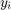, is a vector of observations obtained using linear projections specified by some unknown matrix D, of the corresponding sparse column-vector of the (unobserved) matrix . For example, if the columns of are (vectorized) images, such as fMRI scans of a brain, then the columns of are dictionary elements, or atoms (i.e., some "elementary" images, for example, corresponding to particular brain areas known to be activated by specific tasks and/or stimuli), and the columns of correspond to sparse codes needed to represent each image using the dictionary (i.e., one can hypothesize that the brain activation observed in a given fMRI scan can be represented as a weighted linear superposition of a relatively small number of active brain areas, out of a potentially large number of such areas).
The ultimate sparse-coding objective is to find both and that yield the sparsest representation of the data , subject to some acceptable approximation error :
Note that this problem formulation looks very similar to the classical sparse signal recovery problem, only with two modifications:
- dictionary A is now included as an unknown variable that we must optimize over
- there are M, rather than just one, observed samples and the corresponding sparse signals, or sparse codes.
As usual, there are also two alternative ways of formulating the above constrained optimization problem, i.e. by reversing the roles of the objective and the constraint:
for some k that corresponds to the above , or by using the Lagrangian relaxation:
Clearly, the computational complexity of dictionary learning is at least as high as the complexity of the original (NP-hard) -norm minimization problem. Thus, the -norm relaxation can be applied, as before, to at least convexify the subproblem concerned with optimizing over the matrix. Also, it is common to constrain the norm of the dictionary elements (e.g., by unit norm), in order to avoid arbitrarily large values of elements (and, correspondingly, infinitesimal values of entries) during the optimization process.
There exist several algorithms for dictionary learning:
- Method of Optimal Directions(MOD)
- K-SVD
- Online dictionary learning
Image Denoising Using Overcomplete Dictionaries
In this section, we will analyze use of overcomplete dictionaries in classic image denoising problem. An ideal image is measured in the presence of an additive zero-mean white and homogeneous Gaussian noise with standard deviation . The measured image is . Our goal is to design an algorithm that can remove the noise from , getting as close as possible to the original image .
clearvars close all clc % INITIALIZATION addpath('utilities') addpath('data') % size of extracted square (w*w) patches blockSize = 8; % number of image patches in set Y N = 1000; % length of signal y (vectorized image patch) n = blockSize^2; % desired sparsity (number of non-zero elements in sparse representation vector) T0 = 20; % number of atoms in dictionary D K = 500; % load image for patch extraction imagePath = '.\data\barb.png'; image = im2double(imresize(imread(imagePath), 1)); % add additive noise noise sigma = 0.1; image = image + sigma*randn(size(image)); [imH, imW] = size(image); % EXTRACT IMAGE PATCHES & INITIALIZE DICTIONARY D0 & PLOT DICTIONARY [~, Y_train] = extractImagePatches(image, blockSize, 'rand', 'nPatches', 5000); % [~, Y_train] = extractImagePatches(image, blockSize, 'seq', 'Overlap', 0); meanY_train = mean(Y_train); Y_train = Y_train - repmat(meanY_train, [blockSize^2,1]); D0 = initDictionaryFromPatches(n, K, Y_train); % % ALTERNATIVE: generate overcomplete DCT dictionary % D0 = generateOvercompleteDCTdictionary(n, K); visualizeDictionary(D0); title('Initial Dictionary') % DICTIONARY LEARNING % perform dictionary learning by iteratively repeating coefficient % calculation and dictionary update steps niter_learn = 10; niter_coeff = 10; niter_dict = 10; D = D0; E0 = []; sigma = 0.1; lambda = 1.5 * sigma; for iter = 1:niter_learn fprintf('Dictionary Learning Iteration No. %d\n', iter); %%%%%%%%%%%%%%%% coefficient calculation %%%%%%%%%%%%%%%%%%%%%%% X = sparseCode(Y_train, D, T0, niter_coeff, 'StepSize', 20000, 'Verbose', 0); E0(end+1) = norm(Y_train-D*X, 'fro')^2; %%%%%%%%%%%%%%%% dictionary update %%%%%%%%%%%%%%%%%%%%%%%%%%% [D, X] = updateDictionary(Y_train, X, D, 'aksvd', 'nIter', niter_dict, 'Verbose', 0); E0(end+1) = norm(Y_train-D*X, 'fro')^2; end figure, hold on plot(1:2*niter_learn, E0); plot(1:2:2*niter_learn, E0(1:2:2*niter_learn), '*'); plot(2:2:2*niter_learn, E0(2:2:2*niter_learn), 'o'); axis tight; legend('|Y-DX|^2', 'After coefficient update', 'After dictionary update'); % DICTIONARY LEARNING - SPAMS param.lambda = 0.1; param.numThreads = -1; % number of threads param.iter = 100; % let us see what happens after 1000 iterations. param.mode = 1; param.D = D0; D = mexTrainDL(Y_train, param); figure visualizeDictionary(D) title('Final Dictionary') % IMAGE DENOISING D=D0; [~, Y, Xp, Yp] = extractImagePatches(image, blockSize, 'seq', 'Overlap', blockSize-1); meanY = mean(Y); Y = Y - repmat(mean(Y), [blockSize^2,1]); X = sparseCode(Y, D, T0, 10, 'StepSize', 5000, 'Plot', 0, 'Verbose', 0, 'ThreshType', 'soft', 'Sigma', 0.1); PA = reshape((D*X), [blockSize blockSize size(Y, 2)]); PA = PA - repmat( mean(mean(PA)), [blockSize blockSize] ); PA = PA + reshape(repmat( meanY, [blockSize^2 1] ), [blockSize blockSize size(Y, 2)]); W = zeros(imH, imW); denoisedImage = zeros(imH, imW); for i=1:size(Y, 2) x = Xp(:,:,i); y = Yp(:,:,i); denoisedImage(x+(y-1)*imH) = denoisedImage(x+(y-1)*imH) + PA(:,:,i); W(x+(y-1)*imH) = W(x+(y-1)*imH) + 1; end denoisedImage = denoisedImage ./ W; figure, subplot(121), imagesc(image), title('Noisy image'), axis image subplot(122), imagesc(denoisedImage), title('Denoised image'), axis image
Dictionary Learning Iteration No. 1 Dictionary Learning Iteration No. 2 Dictionary Learning Iteration No. 3 Dictionary Learning Iteration No. 4 Dictionary Learning Iteration No. 5 Dictionary Learning Iteration No. 6 Dictionary Learning Iteration No. 7 Dictionary Learning Iteration No. 8 Dictionary Learning Iteration No. 9 Dictionary Learning Iteration No. 10


Image Inpainting Using Overcomplete Dictionary
close all clearvars clc % load image for patch extraction image = im2double(imresize(imread('lena.png'), 0.5)); [imH, imW] = size(image); % generate random binary mask mask = abs(rand(size(image)))>0.5; % masking out image pixels image = mask .* image; % size of extracted patch w = 16; % number of image patches in set Y N = 5000; % length of signal y n = w^2; % desired sparsity T0 = 10; % number of atoms in dictionary K = 128; % overlap q = 1; [y, x] = meshgrid(1:q:imH-w/2, 1:q:imW-w/2); [dY,dX] = meshgrid(0:w-1,0:w-1); N = size(x(:),1); Xp = repmat(dX,[1 1 N]) + repmat( reshape(x(:),[1 1 N]), [w w 1]); Yp = repmat(dY,[1 1 N]) + repmat( reshape(y(:),[1 1 N]), [w w 1]); Xp(Xp>imH) = 2*imH-Xp(Xp>imH); Yp(Yp>imW) = 2*imW-Yp(Yp>imW); Y = image(Xp+(Yp-1)*imH); Y = reshape(Y, [n, N]); M = mask(Xp+(Yp-1)*imH); M = reshape(M, [n, N]); [Y, meanY] = substractMeanCols(Y); nIter = 1; D = generateOvercompleteDCTdictionary(n, 400); X = zeros(size(D,2),size(Y,2)); sigma = 0.00000001; lambda = 1.5 * sigma; tau = 1.9/norm(D*D'); th=tau*lambda; stepSize = 5000; for jj = 1:stepSize:size(Y,2) jj jumpSize=min(jj+stepSize-1,size(Y,2)); X_tmp = zeros(size(D,2),1); for i = 1:nIter for kk = jj:jumpSize R = M(:,kk).*D*X_tmp-Y(:,kk); th = tau*lambda; X_tmp = softThreshold(X_tmp-tau*(M(:,kk).*D)'*R, th'); X(:,kk)=X_tmp; end end end PA = reshape(D*X, [w w N]); PA = PA - repmat( mean(mean(PA)), [w w]); PA = PA + reshape(repmat( meanY, [w^2 1] ), [w w N]); W = zeros(imH, imW); inpaintedImage = zeros(imH, imW); for i=1:size(Y, 2) x = Xp(:,:,i); y = Yp(:,:,i); inpaintedImage(x+(y-1)*imH) = inpaintedImage(x+(y-1)*imH) + PA(:,:,i); W(x+(y-1)*imH) = W(x+(y-1)*imH) + 1; end inpaintedImage = inpaintedImage ./ W; figure, subplot(121), imagesc(image), title('Damaged image'), axis image subplot(122), imagesc(inpaintedImage), title('Inpainted image'), axis image
jj =
1
jj =
5001
jj =
10001
jj =
15001
jj =
20001
jj =
25001
jj =
30001
jj =
35001
jj =
40001
jj =
45001
jj =
50001
jj =
55001
jj =
60001

Discriminative Sparse Representation
If sufficient training samples are available from each class, it will be possible to represent the test samples as a linear combination of just those training samples from the same class. This representation is naturally sparse, involving only a small fraction of the overall training database. We argue that in many problems of interest, it is actually the sparsest linear representation of the test sample in terms of this dictionary and can be recovered efficiently via -minimization. Seeking the sparsest representation therefore automatically discriminates between the various classes present in the training set.
A basic problem in object recognition is to use labeled training samples from k distinct object classes to correctly determine the class to which a new test sample belongs. We arrange the given training samples from the th class as columns of a matrix
Given sufficient training samples of the th object class, , any new test sample from the same class will approximately lie in the linear span of the training samples associated with object :
for some scalars, , 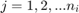
Since the membership of the test sample is initially unknown, we define a new matrix for the entire training set as the concatenation of the training samples of all object clases:
Then, the linear representation of can be rewritten in terms of all training samples as where is a coefficient vector whose entries are zero except those associated with the th class.
As the entries of the vector encode the identity of the test sample , it is tempting to attempt to obtain it by solving the linear system of equations . This can be done by using sparse optimization.
Given a new test sample from one of the classes in the training set, we first compute its sparse representation using sparse coding. Ideally, the nonzero entries in the estimate will all be associated with the columns of from a single object class , and we can easily assign the test sample to that class. However, noise and modeling error may lead to small nonzero entries associated with multiple object calsses. We can classify based on how well the coefficients associated with all training samples of each object reproduce .
For each calss , let be the characteristic function that selects the coefficients associated with the th class. For , is a new vector whose only nonzero entries are the entries in that are associated with calss . Using only the coefficients associated with the th class, one can approximate the given test sample as . We then classify based on these approximations by assigning it to the object class that minimizes the residual between and :
%%SPARSE REPRESENTATION CLASSIFIER % this is example in which we classify human face images based on sparse % representation error % we load 10 training and 10 testing images with face expression, % face position and also light condition variations load images_training load images_testing imSize = [100, 90]; visTrain = col2im(images_training, imSize, imSize*10, 'distinct'); visTest = col2im(images_testing, imSize, imSize*10, 'distinct'); % create labels for training samples labels = kron(1:10, [1 1 1 1 1 1 1 1 1 1]); % random faces dimensionality reduction n = 500; R = randn(n, size(images_training, 1)); R = normalizeColumns(R')'; D=(R*images_training); Y=(R*images_testing); % desired sparsity of sparse representation T0 = 10; % no of iterations of sparse coding algorithm nIter = 10; % perform sparse coding X = sparseCode(Y, D, T0, nIter); % find unique class labels and find maximum class label uniqlabels = unique(labels); classNo = max(size(uniqlabels)); for i = 1:classNo % compute residuals of sparse representation residual = Y - D(:, find(labels==uniqlabels(i))) * X(find(labels==uniqlabels(i)), :); src_scores(:,i) = sqrt(sum(residual.*residual, 1)); end % classify observed test input based on sparse representation error % smallest error representation is the best one [maxval, indices] = min(src_scores, [], 2); classificationLabel = uniqlabels(indices) classificationLabel = imresize(classificationLabel, [9000, 100], 'nearest'); visPred = col2im(classificationLabel, imSize, imSize*10, 'distinct'); figure, colormap gray imagesc(visTrain) axis image title('Training Images') figure, colormap gray imagesc(visTest) axis image title('Testing Images') figure, colormap jet imagesc(visPred) axis image title('Classification Labels')
classificationLabel =
Columns 1 through 13
1 1 1 1 1 1 1 1 1 1 2 2 2
Columns 14 through 26
2 2 2 2 2 2 2 3 3 3 3 3 3
Columns 27 through 39
3 3 3 3 4 4 4 4 4 4 4 4 4
Columns 40 through 52
4 5 5 5 5 5 5 5 5 5 5 6 6
Columns 53 through 65
6 6 6 6 6 6 6 6 7 7 7 7 7
Columns 66 through 78
7 7 7 7 7 8 8 8 8 8 8 8 8
Columns 79 through 91
8 8 9 9 9 9 9 9 9 9 9 9 10
Columns 92 through 100
10 10 9 10 9 10 9 9 10


Discriminative K-SVD (D-KSVD)
Let denote a set of -dimensional training signals with a corresponding label matrix , where is the number of classes. Each column of the label matrix encodes the class label of sample using the position of the nonzero value. For example, if the label of sample is 3, then .
The original K-SVD algorithm solves the following optimization problem:
where is the sparsity constraint, making sure that each sparse representation contains not more than nonzero entries. The dictionary , where is the number of atoms in the dictionary, and the sparse codes , obtained by the K-SVD solution minimize the signals reconstruction error under the sparsity constraint .
The goal of D-KSVD is to use the given label matrix to learn a linear classifier taking in a signals sparse representation and returning the most probable class this signal belongs to. A straightforward approach to this would be to solve the following linear ridge regression problem:
where is the regularization parameter. This problem has the following closed form solution:
The drawback of this solution is that learning the classifier is done independently from learning the dictionary and the sparse codes , and thus is suboptimal: the dictionary learning procedure does not take into account the fact that its output will be used to train a classifier.
To overcome the sub-optimality of the K-SVD algorithm for classification discussed above, one can incorporate the classification error term directly into the K-SVD dictionary learning formulation, causing the K-SVD algorithm to simultaneously learn the dictionary and the classifier. The joint dictionary classifier learning problem is defined as follows:
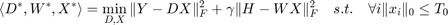
where is a regularization parameter balancing the contribution of the classification error and discrimination power.
%%DISCRIMINATIVE DICTIONARY LEARNING USING K-SVD (D-KSVD) % this is example in which we classify human face images based on D-KSVD % we load 10 training and 10 testing images with face expression, % face position and also light condition variations load images_training load images_testing nPerson = 10; nTraining = 10; nTesting = 10; imSize = [100, 90]; visTrain = col2im(images_training, imSize, imSize*10, 'distinct'); visTest = col2im(images_testing, imSize, imSize*10, 'distinct'); % random faces dimensionality reduction n = 500; R = randn(n, size(images_training, 1)); R = normalizeColumns(R')'; Y0 = R*images_training; K = nPerson*nTraining; niter_learn = 10; niter_coeff = 30; niter_dict = 10; % desired sparsity T0 = 4; D_cat = []; % initialize class label matrix H = kron(diag(ones(nPerson,1)), ones(size(Y0,2)/10, 1))'; % perform few iterations of KSVD on class-specific dictionaries and % concatenate them to form initial dictionary for D-KSVD param.K = K/nPerson; param.numIteration=niter_learn; param.InitializationMethod='DataElements'; param.preserveDCAtom=0; param.L = T0; for i = 1:nPerson Y_part = Y0(:,(i-1)*10+1:i*10); D_part = initDictionaryFromPatches(n, K/nPerson, Y_part); [D_part, X] = learnDictionary(Y_part, D_part, param.K, 'nIterLearn', 5, 'Verbose', 0); D_cat = [D_cat, D_part]; end % compute sparse representation for training images using OMP X = OMP(D_cat,Y0,T0); % initialize linear classifier W W0 = (H*X')/(X*X'+eye(size(X*X'))); % factor that controls reconstructive/discriminative dictionary properties gamma = 100; % concatenate linear classifier W to the dictionary D0 and concatenate label % matrix H to training signals D = [D_cat; sqrt(gamma)*W0]; Y = [Y0; sqrt(gamma)*H]; % perform D-KSVD param.K = K; param.numIteration = 5; param.InitializationMethod = 'GivenMatrix'; param.initialDictionary = D; param.preserveDCAtom = 0; param.L = T0; [D, out] = KSVD(Y, param); % normalize dictionary and linear classifier D_final = (D(1:n,:))./(sqrt(sum(abs(D(1:n,:).^2),1))); W_final = (D(n+1:end,:))./(sqrt(sum(abs(D(1:n,:).^2),1))); % perform random faces dimensionality reduction on test dataset Y_testing = R*images_testing; % sparse code test dataset using OMP X = zeros(size(D, 2), size(Y_testing, 2)); X = OMP(D_final, Y_testing, 5); % use trained linear classifier on test dataset classCode = (W_final * X); % find class label [~, classificationLabel] = max(abs(classCode)) classificationLabel = imresize(classificationLabel, [9000, 100], 'nearest'); visPred = col2im(classificationLabel, imSize, imSize*10, 'distinct'); figure, colormap gray imagesc(visTrain) axis image title('Training Images') figure, colormap gray imagesc(visTest) axis image title('Testing Images') figure, colormap jet imagesc(visPred) axis image title('Classification Labels')
classificationLabel =
Columns 1 through 13
1 1 1 1 1 1 1 1 1 1 2 2 2
Columns 14 through 26
2 2 2 2 2 2 2 3 3 3 3 3 3
Columns 27 through 39
3 3 3 3 4 4 4 4 4 4 4 4 4
Columns 40 through 52
4 5 5 5 5 5 5 5 5 5 5 6 6
Columns 53 through 65
6 6 6 6 6 6 6 6 7 7 7 7 7
Columns 66 through 78
7 7 7 7 7 8 8 8 8 8 8 8 8
Columns 79 through 91
8 8 9 9 9 9 9 9 9 9 9 9 10
Columns 92 through 100
10 10 10 10 10 10 10 10 10